Package overview
package_overview.Rmd1. Introduction
envar is an R package that enables the download of a wide range of environmental variables and their processing. In this tutorial we explore all the potential uses of the package, to give an idea of the breadth of uses and of the potential challenges and shortcuts. First we illustrate the five ways in which it is possible to define a study area: 1) global data, 2) a country or continent is specified, 3) an ecological boundary is specified, 4) a polygon shapefile is loaded, 5) a point shapefile is loaded, 6) a point data.frame is loaded, 7) a buffer is specified in addition to another element, or 8) a species range is create. Then we illustrate how to project to a different reference system, aggregate the results to a different lower resolution, how to check for correlation and extrapolation, how to set NAs consistently across raster layers, and optionally save the results locally.
2. Load the package
First we load envar. When executing this command, another
package (dplyr) will be automatically loaded to ensure the
full functionality of the package. However, other packages are often
required for plotting and further analyses and we also load them here
for later use.
3. Set study area
Below, we illustrate a set of download examples covering all possible customizations of the user query, to make sure that every use is covered and illustrated.
3.1. Global data
3.1.1. Single layer
We here show an example of download of a single variable from a single source, in this case the 1 km land cover based on ESA (Lo Parrino et al. 2025). The variable is downloaded and maintains its original extent. If not aggregated, the original grid resolution of any source is always 30 arcseconds (0.00833°, or ~ 1 km) at the equator.
processed_singlelayer_lc <- var_get() %>%
esalandcover(vars=c("ice")) The print in the console is omitted in this tutorial to avoid output overflow. When run locally, the print in the console displays the citation(s) and doi(s) for the downloaded source(s) to make sure that users cite the proper source(s) when redacting manuscripts or using data for public presentations. Then, a progress bar is shown for each variable that is being downloaded and success messages are issued when each variable has been correctly processed. The output is a SpatRaster object from the terra package, which can be plotted and further processed.
plot(processed_singlelayer_lc)
3.1.2. Multiple layers with different extents
When multiple layers from different sources are downloaded together, the output automatically crops all layers to the smallest shared extent. If more than two sources are reported, the code updates step-by-step the shared extent across all layers.
processed_bilayer_global <- var_get() %>%
chelsa(vars = c("pr"), months = 12, year = 2015) %>%
esalandcover(vars = c("ice"))
plot(processed_bilayer_global)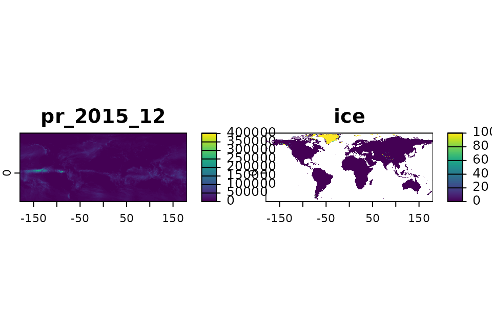
The same occurs if the order of downloaded variables is inverted:
processed_bilayer_global_1 <- var_get() %>%
esalandcover(vars = c("ice")) %>%
chelsa(vars = c("pr"), months = 12, year = 2015)
plot(processed_bilayer_global_1)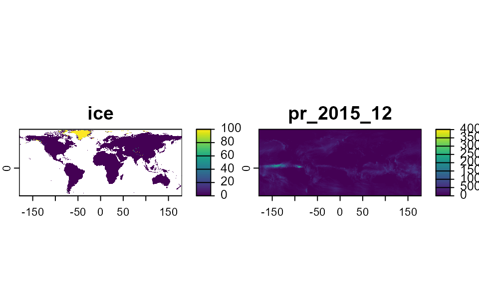
# define the extents of the first SpatRaster object and of the second to check if they are the same
ext1 <- round(ext(processed_bilayer_global), 1)
ext2 <-round(ext(processed_bilayer_global_1), 1)
# print the resulting extents
print(ext1)## SpatExtent : -180, 180, -60, 84 (xmin, xmax, ymin, ymax)
print(ext2)## SpatExtent : -180, 180, -60, 84 (xmin, xmax, ymin, ymax)3.2. Country/continent
3.2.1. Country
A country can be specified by name (case‑insensitive). The output is cropped/masked to that country.
processed_bilayer_country <- var_get(country = "Italy") %>%
esalandcover(vars = c("ice")) %>%
chelsa(vars = c("pr"), months = 12, years = 2015)
plot(processed_bilayer_country)
3.2.2. Continent
processed_singlelayer_africa <- var_get(continent = "Africa", buffer = 10) %>%
esalandcover(vars = c("forest"))
plot(processed_singlelayer_africa)
All countries and continents are retrieved with internal calls to the rnaturalearth R package, which allows the download of shapefiles from the Natural Earth dataset. However, the continent of Europe has a complex shape if downloaded from Natural Earth, and the invalid resulting geometry provides unrealistic outputs. Thus, if continent = “Europe” is specified, a shapefile of geographic Europe is used (including Russia only up to the Ural mountains and excluding overseas territories), based on data from the Global Administrative Areas GADM.
processed_singlelayer_europe <- var_get(continent = "Europe") %>%
esalandcover(vars = c("forest"))
plot(processed_singlelayer_europe)
3.2.3. Set the scale
When retrieving continents or countries from Natural Earth (i.e., any time the “country” or “continent” argument is used except for Europe), an additional argument (“scale”) can be specified. This represents the scale at which the shapefiles are retrieved, and can assume three values: small (1:100 m), medium (the default; 1:50 m), and large (1:10 m). The boundaries will appear rough and imprecise with a small scale and finer with a large scale. The default is “medium” to download data at resolution that is sufficiently detailed but lighter and faster than high-resolution.
# download variables over a country shape at "small" scale
processed_bilayer_country_small <- var_get(country = "Italy", scale = "small") %>%
esalandcover(vars = c("ice")) %>%
chelsa(vars = c("pr"), months = 12, years = 2015)
plot(processed_bilayer_country_small)
# download variables over a country shape at "large" scale
processed_bilayer_country_large <- var_get(country = "Italy", scale = "large") %>%
esalandcover(vars = c("ice")) %>%
chelsa(vars = c("pr"), months = 12, years = 2015)
plot(processed_bilayer_country_large)
3.3. Ecological boundary
3.3.1. Ecoregions
It is possible to specify an ecoregion/biome/realm based on the work of Dinerstein and colleagues published on BioScience (Dinerstein et al. 2017). Insert the full name of the ecoregion/biome/realm; to check the names visit the interactive website.
processed_ecoregion <- var_get(ecoregion = "Lower Gangetic Plains moist deciduous forests") %>%
esalandcover(vars = c("tree"))
plot(processed_ecoregion)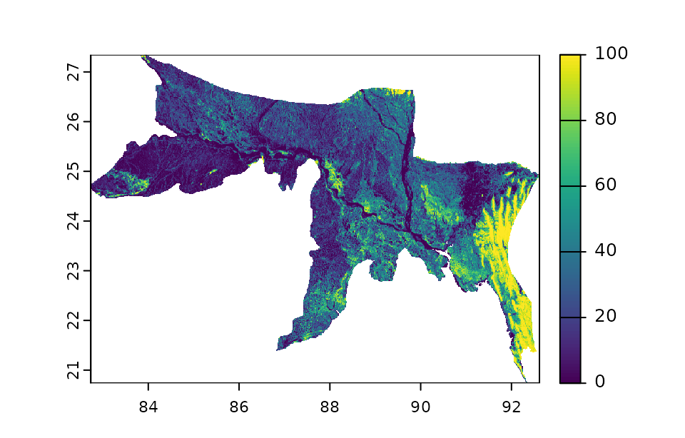
processed_biome <- var_get(biome = "Tundra") %>%
esalandcover(vars = c("ice"))
plot(processed_biome)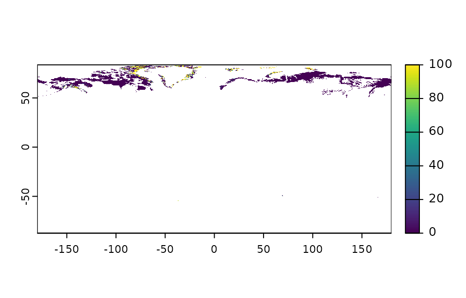
processed_realm <- var_get(realm = "Neotropic") %>%
esalandcover(vars = c("tree"))
plot(processed_realm)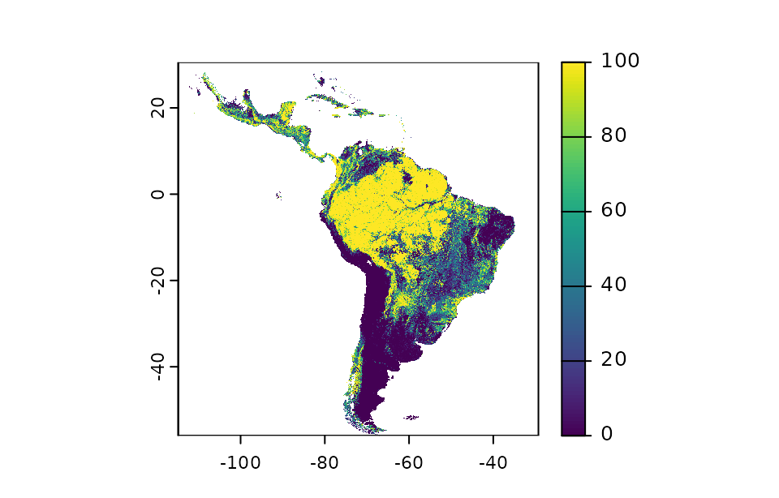
3.3.2. Zoogeographic regions
It is possible to specify a zoogeographic region/realm based on the update of Wallace’s zooregions by Holt and colleagues (Holt et al. 2013). Insert the full name of the zoogeographic region/realm.
The following zooregions are available: “South American”, “Australian”, “Novozelandic”, “African”, “Madagascan”, “Papua-Melanesian”, “Amazonian”, “Guineo-Congolian”, “Indo-Malayan”, “Panamanian”, “Oriental”, “Saharo-Arabian”, “Mexican”, “Chinese”, “North American”, “Eurasian”, “Tibetan”, “Japanese”, “Arctico-Siberian”, and “Polynesian”.
processed_zooregion <- var_get(zooregion = "Madagascan") %>%
esalandcover(vars = c("tree"))
plot(processed_zooregion)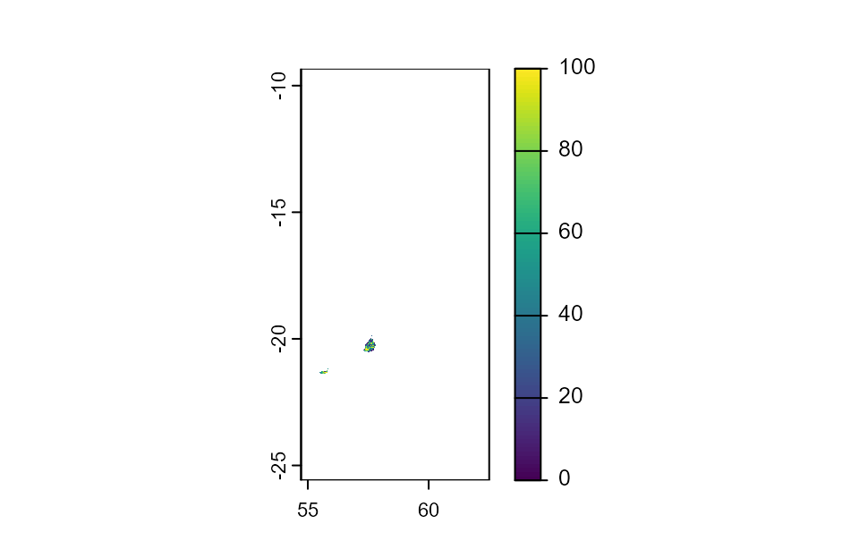
And the following zoorealms are available: “Neotropical”, “Australian”, “Afrotropical”, “Madagascan”, “Oceanina”, “Oriental”, “Panamanian”, “Saharo-Arabian”, “Nearctic”, “Sino-Japanese”, and “Palearctic”.
processed_zoorealm <- var_get(zoorealm = "Neotropical") %>%
esalandcover(vars = c("tree"))
plot(processed_zoorealm)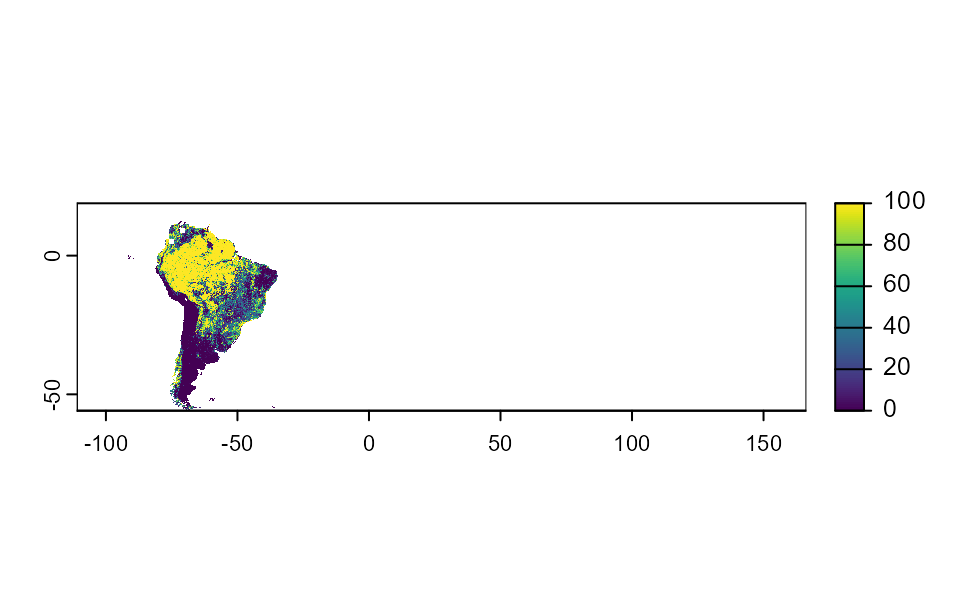
3.3.3. Mountain regions
The Global Mountain Biodiversity Assessment working group has defined a classification of mountain systems (Snethlage et al. 2022). We make available through the package the large scale selection of non-overlapping mountain systems (291). To see the available mountain regions and their names check the website.
processed_mountain_region <- var_get(mountain_region = "European Alps") %>%
esalandcover(vars = c("tree"))
plot(processed_mountain_region)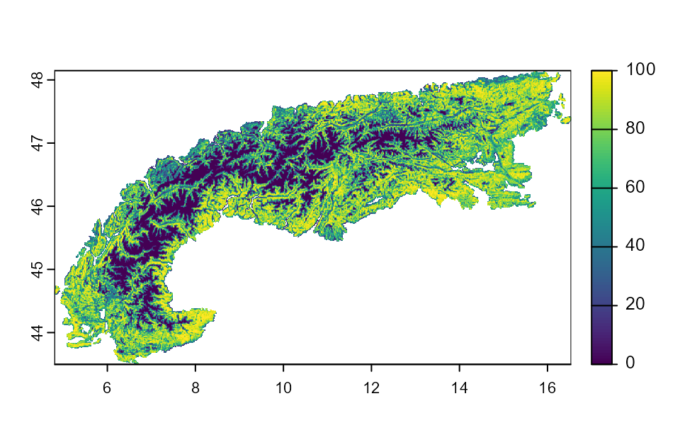
3.3.4. CMEC mountain regions
The Center for Macroecology, Evolution and Climate at the University of Copenhagen has developed another classification of mountain regions (Rahbek et al. 2019). We make available through the package the mountain regions so defined (135). To see the available mountain regions and their names check the original publication.
processed_mountain_region_cmec <- var_get(mountain_region_cmec = "Alps and central European outliers") %>%
esalandcover(vars = c("tree"))
plot(processed_mountain_region_cmec)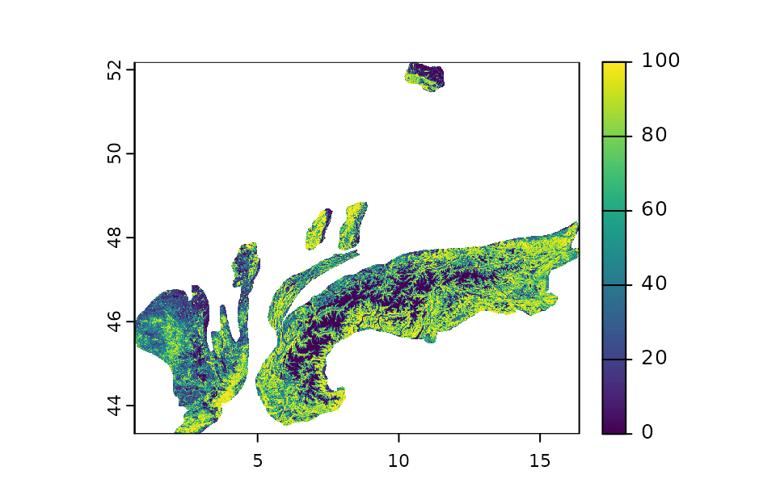
3.3.5. Glacier regions
The Randolph Glacier Inventory team defined a set of 19 (old version) or 20 (new version) glacier regions that are broad areas that encompass different mountainous and polar areas of the globe (Pfeffer et al. 2014). Here, we make available both the 19 regions classification and the 20 regions classification. The numeric code of the region must be inserted.
processed_glacier_region <- var_get(glacier_region_19 = "11") %>%
esalandcover(vars = c("ice"))
plot(processed_glacier_region)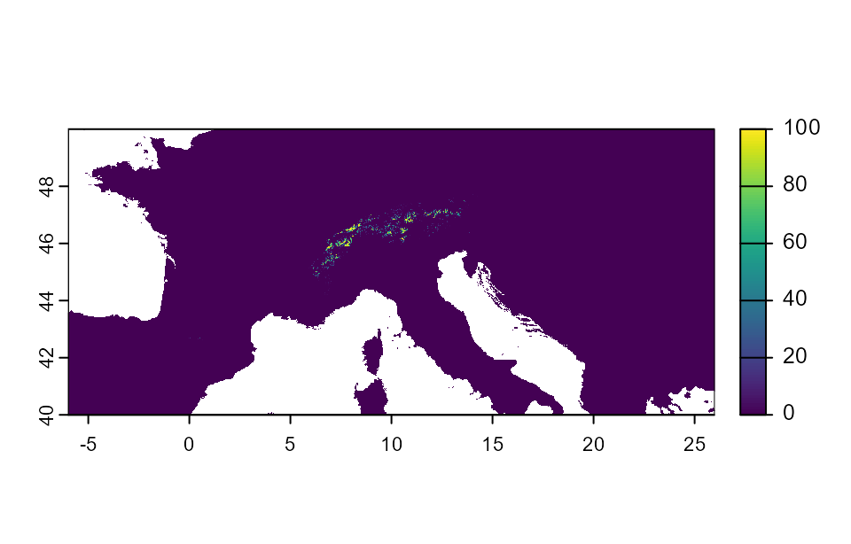
3.3.6. Freshwater ecoregions
Freshwater ecoregions have been widely used in ecological studies following their definition by (Abell et al. 2008). As the provided shapefile does not include the full names of freshwater ecoregions but only their numeric IDs, instead of the name the user must insert the ecoregion ID. Check the interactive interface here to find out the available freshwater ecoregions and their IDs. We consider the Florida Peninsula (ID = 156) as an example here.
processed_freshwater_ecoregion <- var_get(freshwater_ecoregion = 156) %>%
esalandcover(vars = c("tree"))
plot(processed_freshwater_ecoregion)
3.3.7. Marine regions
Marine regions are available from two different data references; the first one is the Marine Ecoregions Of the World (MEOW) (Spalding et al. 2007), which provides a classification of coastal and shelf areas. The second one is the Pelagic Provinces Of the World (PPOW) (Spalding et al. 2012), providing an inventory of surface pelagic waters. The available arguments are “marine_ecoregion,”marine_realm”, and “marine_province” for MEOW, and “pelagic_province”, “pelagic_biome”, and “pelagic_realm” for PPOW. You can explore the MEOW available names here and the PPOW available names through the relative publication.
processed_marine_ecoregion <- var_get(marine_ecoregion = "East African Coral Coast") %>%
biooracle(vars = c("o2"))
plot(processed_marine_ecoregion)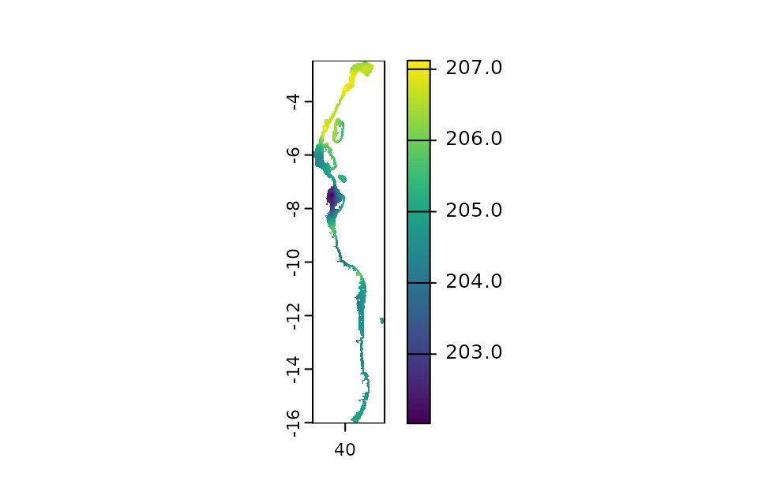
3.4. Custom shapefile
3.4.1. Points
If a POINT shapefile is used and no buffer is applied, the output will be a data.frame containing columns: ID (integer going from 1 to the length of the dataset), X (longitude), Y (latitude), and the extracted values over the specified points.
points <- sf::st_sample(Alps, size = 100, type = "random")
processed_singlelayer_points <- var_get(shape = points, crs=3035) %>%
esalandcover(vars = c("ice"))
processed_bilayer_points <- var_get(shape = points, crs=3035) %>%
esalandcover(vars = c("ice")) %>%
chelsa(vars = c("pr"), months = 12, year = 2015)
# visualize the resulting data.frame with the extracted values when only one source was used
head(processed_singlelayer_points)## ID X Y ice
## 1 1 3970812 2474859 0
## 2 2 4695346 2761962 0
## 3 3 4470778 2545336 0
## 4 4 4341590 2644392 0
## 5 5 4597806 2647273 0
## 6 6 4635918 2639117 0
# visualize the resulting data.frame with the extracted values when two or more sources were used
head(processed_bilayer_points)## ID X Y ice pr_2015_12
## 1 1 3970812 2474859 0 1626
## 2 2 4695346 2761962 0 6745
## 3 3 4470778 2545336 0 737
## 4 4 4341590 2644392 0 2498
## 5 5 4597806 2647273 0 1111
## 6 6 4635918 2639117 0 6943.4.2. Polygon
The user can load a shapefile of type POLYGON and use it to crop/mask
the downloaded variables. Here we use the already included European Alps
shapefile (Alps()).
processed_bilayer_shapefile <- var_get(shape = Alps) %>%
esalandcover(vars = c("ice")) %>%
chelsa(vars = c("pr"), months = 12, year = 2015)
plot(processed_bilayer_shapefile[[2]])
3.5. Data frame of points
Points can be fed into the package in the form of a data.frame with only two columns that represent coordinates. Column names must be X and Y, reporting the longitude and latitude, respectively. The CRS is assigned based on user input (default: 4326).
points3035 <- st_transform(points, 3035)
points3035df <- as.data.frame(st_coordinates(points3035))
processed_singlelayer_pointsdf <- var_get(pointsdf = points3035df, crs = 3035) %>%
esalandcover(vars = c("ice"))
processed_bilayer_pointsdf <- var_get(pointsdf = points3035df, crs = 3035) %>%
esalandcover(vars = c("ice")) %>%
chelsa(vars = c("pr"), months = 12, year = 2015)
# visualize the resulting data.frame when using only one source
head(processed_singlelayer_pointsdf)## ID X Y ice
## 1 1 3970812 2474859 0
## 2 2 4695346 2761962 0
## 3 3 4470778 2545336 0
## 4 4 4341590 2644392 0
## 5 5 4597806 2647273 0
## 6 6 4635918 2639117 0
# visualize the resulting data.frame when using multiple sources
head(processed_bilayer_pointsdf)## ID X Y ice pr_2015_12
## 1 1 3970812 2474859 0 1626
## 2 2 4695346 2761962 0 6745
## 3 3 4470778 2545336 0 737
## 4 4 4341590 2644392 0 2498
## 5 5 4597806 2647273 0 1111
## 6 6 4635918 2639117 0 6943.6. Buffer
3.6.1. Apply a buffer to a shape
A positive buffer expands the shape by the specified number of kilometers; a negative buffer shrinks it. Units are always km for the user. If the CRS is left to the default (crs=“EPSG:4326”), the function used by the package (st_buffer) automatically transforms the kilometers in degrees so that the buffer is circular on the 3D surface (and the buffer might thus appear non-circular if plotted in 2D). However, it is recommended to always specify a projected CRS when using buffers to avoid potential distortions.
processed_singlelayer_buffer <- var_get(country = "Italy", crs = 3035, buffer = 10) %>%
esalandcover(vars = c("ice"))
plot(processed_singlelayer_buffer)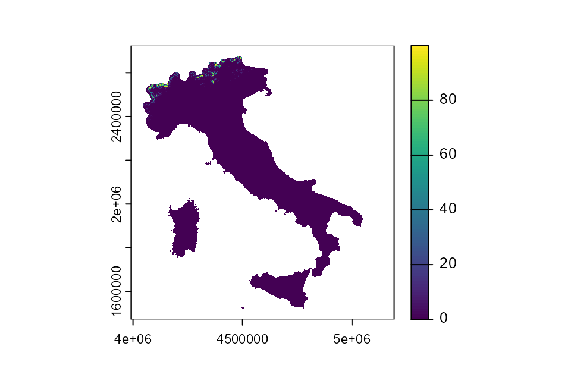
Negative buffer example:
processed_singlelayer_negative_buffer <- var_get(country = "Italy", crs = 3035, buffer = -10) %>%
esalandcover(vars = c("ice"))
plot(processed_singlelayer_negative_buffer)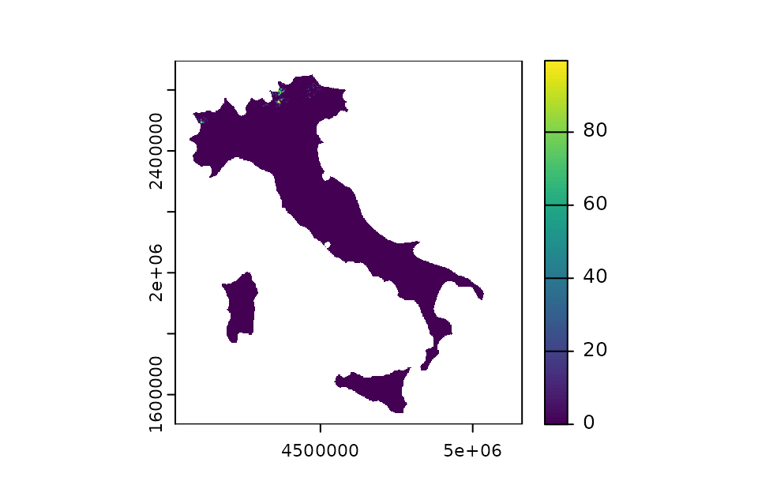
A buffer at global scale (no shape or data.frame or country defined) triggers an error (not shown here):
processed_singlelayer_global_buffer <- var_get(buffer = 10) %>%
esalandcover(vars = c("ice"))3.6.2. Apply a buffer when using points
A buffer (in km) expands the points to a polygon and all the variables that are downloaded are subsequently cropped to that shape. This option can be very useful for instance in Species Distribution Modelling, whereby records of species presence are often known but not absences. The so-called pseudo-absences (i.e. simulated absences of species) and background points (points used to define the background environmental conditions and compare them to presences, as done in the Maximum Entropy algorithm) are typically picked in a defined radius around the presences, to define areas that could theoretically be reached by the species via dispersal. Additionally, picking pseudo-absence/background points in a buffer around presences allows to better simulate the spatial sampling effort patterns and replicate them.
processed_bilayer_points_buffer <- var_get(pointsdf = points3035df, crs = 3035, buffer = 50) %>%
esalandcover(vars = c("ice")) %>%
chelsa(vars = c("pr"), months = 12, year = 2015)
plot(processed_bilayer_points_buffer)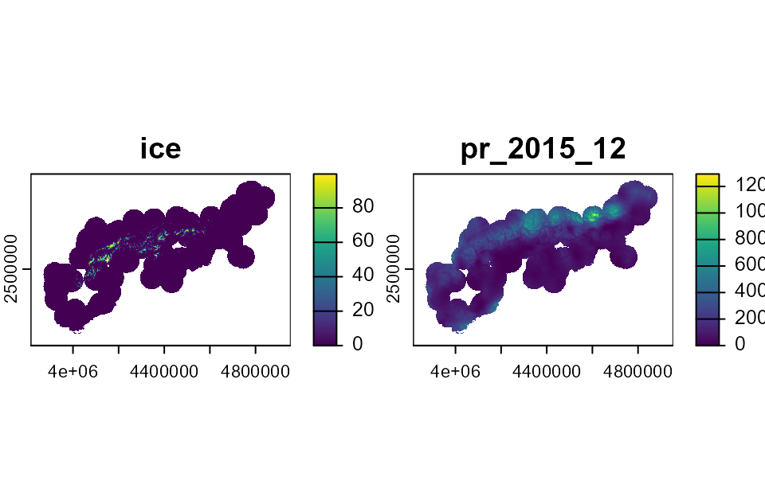
3.7. Further options
3.7.1. Land mask
When downloading data, it is possible to apply a land mask to remove all sea/ocean cells from the output. This can be done by setting the argument “land” to TRUE (default to FALSE, i.e., no land mask is applied). Here we use the glacier region centered on the European Alps to include a rectangle with both land and sea, and how that sea is masked as NA when “land” is set to TRUE.
processed_land <- var_get(glacier_region_19 = 11, crs = 3035, land = TRUE) %>%
esalandcover(vars = c("ice"))
plot(processed_land)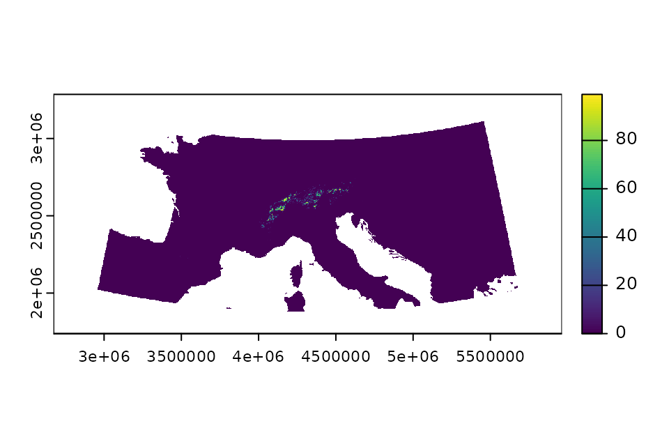
3.7.2. Species range
For many applications, it is important to quantify the surface where a species is found as precisely as possible, for instance when estimating the Area Of Occupancy (AOO) for IUCN assessments. Thus, it is possible to use the alpha_hull = TRUE argument to define a polygon that surrounds at least 99% of occurrence records of the species, defining the maximum range extent (Daru 2025). This option works only if occurrence points are specified as X and Y coordinates in the pointsdf argument. We use the Apollo dataset as an example, a dataset of occurrences of the Parnassius apollo butterfly; the dataset is already included in the package.
processed_range <- var_get(pointsdf = Apollo, alpha_hull = TRUE) %>%
esalandcover(vars=c("ice"))
plot(processed_range)It can also be used in conjunction with a buffer. In this case, an alpha hulll will be created and then expanded by the specified buffer.
processed_range_buffer <- var_get(pointsdf = Apollo, alpha_hull = TRUE, buffer = 10) %>%
esalandcover(vars=c("ice"))
plot(processed_range_buffer)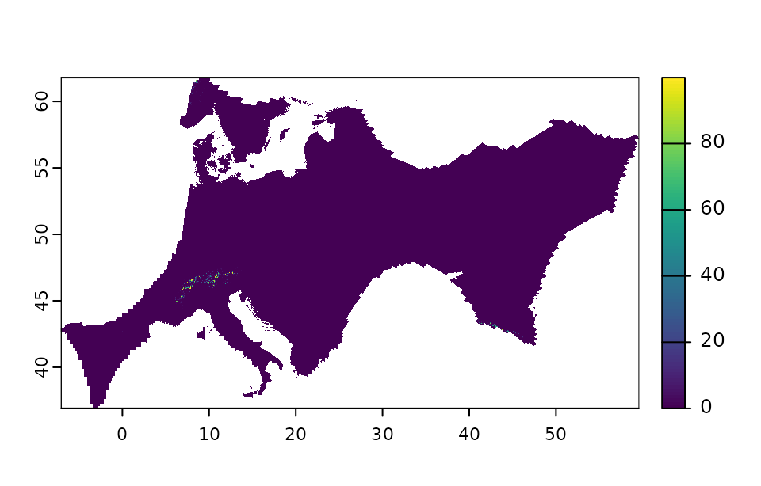
4. Project to another reference system
The single layer is downloaded and maintains its original extent. But
additionally it is projected to the desired Coordinate Reference System
(CRS). The default CRS in envar is the Geographic Reference
System (GRS) WGS 84 (EPSG: 4326). This is the most commonly used GRS for
global analyses. GRS assume that the Earth is an ellipsoid (or spheroid)
and provide coordinates based on a 3D surface with degrees and
latitude-longitude values. However, these systems are not ideal to
compute distances as the meaning of degrees changes based on the
location on earth (e.g., 1 degree of longitude corresponds to ~ 111 km
at the equator but approaches zero towards the poles). Additionally,
users might want to improve spatial analysis accuracy, visualize data in
a specific projection, or align results with other data that use a
different CRS. Thus, a Projected Reference System (PRS) can be used,
where coordinates are based on the location on a 2D system. The
conversion from a GRS to a PRS always implies a certain amount of
distortion, and thus different PRS are optimized for different areas of
the globe to locally reduce distortion when moving from a 3D to a 2D
representation. Thus, users can use the argument “crs” in the
var_get() function to specify the desired CRS. Here we show
an example of download of a single variable from a single source, in
this case the 1 km land cover based on ESA (Lo
Parrino et al. 2025), and its projection to the local
equal-area projection (EPSG:3035). Inside the crs argument, a number or
character representing the code of the PRS must be provided. If nothing
is specified, 4326 is assumed. The crs can also be specified with the
prefix ‘ESRI’ or ‘EPSG’ according to the system, e.g. “EPSG:4326” or
“ESRI:54009”.
processed_singlelayer_projected <- var_get(country = "Italy", crs=3035) %>%
esalandcover(vars=c("ice"))
print(processed_singlelayer_projected)## class : SpatRaster
## dimensions : 1249, 1194, 1 (nrow, ncol, nlyr)
## resolution : 982.9062, 982.9062 (x, y)
## extent : 4004865, 5178455, 1484656, 2712306 (xmin, xmax, ymin, ymax)
## coord. ref. : ETRS89-extended / LAEA Europe (EPSG:3035)
## source(s) : memory
## name : ice
## min value : 0.00000
## max value : 99.62711
plot(processed_singlelayer_projected)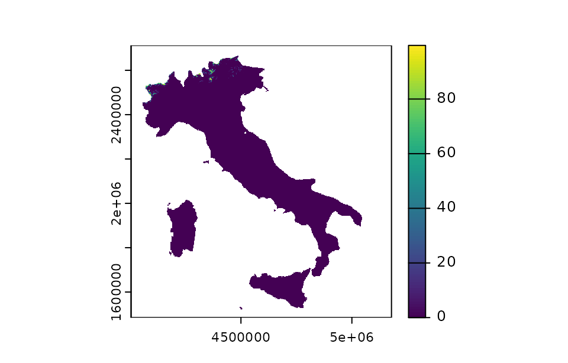
5. Aggregate to a different resolution
A multiple of the native 30 arcsecond grid (~1 km at the equator) can
be set by using an aggregation factor, defined by the argument
res. A value of res = 1 keeps the native
resolution; any value > 1 aggregates the raster by that factor. For
instance, res = 10 aggregates the native grid to a
resolution of ~10 km at the equator. Aggregation is done by computing
the mean value of all cells that are part of the new larger cell.
processed_singlelayer_aggregated <- var_get(res = 100) %>%
esalandcover(vars = c("ice"))
print(processed_singlelayer_aggregated)## class : SpatRaster
## dimensions : 173, 432, 1 (nrow, ncol, nlyr)
## resolution : 0.8333333, 0.8333333 (x, y)
## extent : -180, 180, -60.16667, 84 (xmin, xmax, ymin, ymax)
## coord. ref. : lon/lat WGS 84 (EPSG:4326)
## source(s) : memory
## name : ice
## min value : 0
## max value : 1006. Correlation check
6.1. Add a correlation check when retrieving rasters
It is possible to call the corr_check() function at the
bottom of the code to enable an automatic test of correlation among the
downloaded variables over the defined spatial area and resolution. Doing
this will produce a list containing the processed SpatRaster, Pearson
pairwise correlations, VIF statistics, and a saved correlation plot.
processed_bilayer_corr_check <- var_get(shape = Alps, crs = 3035, res = 2, buffer = 10) %>%
chelsa(vars = c("bio1", "bio4", "bio10", "bio12", "bio19"),
years = "1981-2010") %>%
topography(vars = c("elevation", "slope")) %>%
esalandcover(vars = c("trees", "ice")) %>%
corr_check()The output will thus be a list that contains the following elements: “data” (the SpatRaster or data.frame with your downloaded data), “correlation_matrix” containing a matrix of Pairwise Pearson’s correlation coefficients between all variables, “vif” a data.frame containing the Variance Inflation Factors for each variable, a “summary” that reports if and which variables have a Pearson’s correlation coefficient higher than |0.6| and/or a VIF higher than 3. Lastly, the “plot_path” specifies the local directory to which a plot of the Pearson’s pairwise correlation was saved.
# View the Pearson's pairwise correlation matrix
print(processed_bilayer_corr_check$correlation_matrix)## bio1_1981-2010 bio4_1981-2010 bio10_1981-2010 bio12_1981-2010
## bio1_1981-2010 1.0000000 -0.17098433 0.99411075 -0.58856258
## bio4_1981-2010 -0.1709843 1.00000000 -0.06629979 -0.13822734
## bio10_1981-2010 0.9941107 -0.06629979 1.00000000 -0.61255277
## bio12_1981-2010 -0.5885626 -0.13822734 -0.61255277 1.00000000
## bio19_1981-2010 -0.4182732 -0.33185424 -0.45693075 0.84502782
## elevation -0.9682340 0.06664318 -0.96993166 0.58178549
## slope -0.7884759 0.01527641 -0.79705030 0.57544349
## trees 0.1420440 -0.28430061 0.10591260 0.02372563
## ice -0.4765922 0.13185174 -0.46273645 0.27137511
## bio19_1981-2010 elevation slope trees ice
## bio1_1981-2010 -0.418273159 -0.96823403 -0.78847587 0.142043991 -0.4765922
## bio4_1981-2010 -0.331854239 0.06664318 0.01527641 -0.284300607 0.1318517
## bio10_1981-2010 -0.456930752 -0.96993166 -0.79705030 0.105912597 -0.4627365
## bio12_1981-2010 0.845027822 0.58178549 0.57544349 0.023725631 0.2713751
## bio19_1981-2010 1.000000000 0.44083530 0.39996749 -0.003624083 0.2299007
## elevation 0.440835298 1.00000000 0.83277881 -0.120815882 0.4857175
## slope 0.399967493 0.83277881 1.00000000 0.223848319 0.2433729
## trees -0.003624083 -0.12081588 0.22384832 1.000000000 -0.3266344
## ice 0.229900683 0.48571755 0.24337291 -0.326634442 1.0000000
# View the Variance Inflation Factor values
print(processed_bilayer_corr_check$vif)## Variables VIF
## 1 bio1_1981-2010 2968.795496
## 3 bio10_1981-2010 2577.843777
## 6 elevation 38.536809
## 2 bio4_1981-2010 36.121382
## 7 slope 5.939459
## 4 bio12_1981-2010 5.300138
## 5 bio19_1981-2010 4.668929
## 8 trees 1.869312
## 9 ice 1.562759To better understand the structure of correlation, we can also analyze the correlation plot that was locally stored.

6.2. Add a correlation check when using points
This will create a similar result as for the correlation test applied to a SpatRaster object, but instead of a set of rasters, the first element of the resulting list will be a data.frame with the extracted values.
processed_bilayer_points_corr_check <- var_get(shape = points) %>%
esalandcover(vars = c("ice")) %>%
chelsa(vars = c("pr"), months = 12, year = 2015) %>%
corr_check()
head(processed_bilayer_points_corr_check[[1]])## ID X Y ice pr_2015_12
## 1 1 5.53998 45.29161 0 1626
## 2 2 15.00405 47.85719 0 6745
## 3 3 11.93147 46.00346 0 737
## 4 4 10.27004 46.91268 0 2498
## 5 5 13.62963 46.87798 0 1111
## 6 6 14.12279 46.78674 0 6947. Extrapolation check
It is possible to call the extr_check() function at the
bottom of the code to enable an automatic test of extrapolation,
regardless of whether you requested already a corr_check().
Ecological models often produce spurious predictions when predicting in
environmental conditions not present in the calibration range (Elith et al. 2010). This problem can
arise under two conditions: 1) at least a variable has values outside
the calibration range - strict extrapolation -, or 2) all variables fall
in the calibration range, but novel combinations of predictor values are
met - combinatorial extrapolation - (Zurell
et al. 2012). Inside the function it is possible to
specify if strict and/or combinatorial extrapolation has to be checked
(argument “type” - default to strict only), and it is necessary to
specify the calibration points as data.frame with X and Y columns
(argument “calib_points”) and the CRS of those coordinates (argument
“calib_crs”) if different from the default (EPSG:4326). Extrapolation is
checked creating an environmental overlap mask, through the mecofun
R package (Zurell et al.
2012).
7.1. With rasters
The output is a list with a SpatRaster with one layer - two if both strict and extrapolation are checked - reporting as 1 cells of extrapolation and 0 cells of no extrapolation.
processed_bilayer_extr_check <- var_get(shape = Alps, crs = 3035) %>%
esalandcover(vars = c("ice")) %>%
chelsa(vars = c("pr"), months = 12, year = 2015) %>%
extr_check(calib_points = Apollo, calib_crs = 4326, type = c("strict", "combinatorial"))
plot(processed_bilayer_extr_check$extrapolation$strict)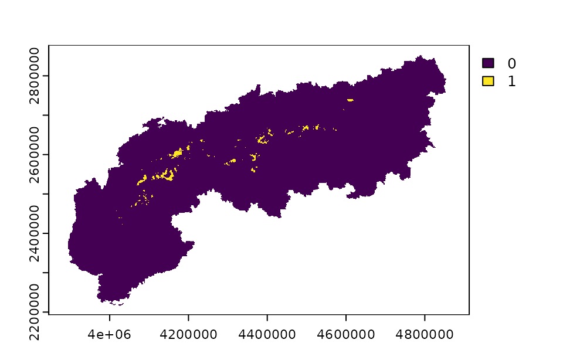
7.2. With points
If the output is a data.frame, one column - two if both strict and extrapolation are checked - are added to the data.frame with extracted variable values, reporting extrapolation as 1 and no extrapolation as 0.
# for example, we use only the first 10 points of the Apollo dataset as a simulated data set to calibrate a model and then we want to apply it to a whole set of points covering a wider environmental range.
processed_points_extr_check <- var_get(pointsdf = Apollo) %>%
esalandcover(vars = c("ice")) %>%
chelsa(vars = c("pr"), months = 12, year = 2015) %>%
extr_check(calib_points = Apollo[1:10,], calib_crs = 4326, type = c("strict", "combinatorial"))
head(processed_points_extr_check$extrapolation)## ID X Y ice pr_2015_12 strict combinatorial
## 1 1 13.49513 47.10400 0.00 761 0 0
## 2 2 12.62265 47.03912 0.01 1667 0 0
## 3 3 6.65878 44.16551 0.00 966 0 0
## 4 4 5.40699 44.15510 0.00 549 0 0
## 5 5 6.05580 44.58935 0.00 415 0 0
## 6 6 6.86447 44.42881 0.00 459 0 08. Set NAs
When the output is a SpatRaster (all sections above and section “15. Apply a buffer when using points” in this tutorial), it is possible to specify that any cell that is NA in at least one layer is NA in all layers. For instance, when downloading data from CHELSA and land cover from (Lo Parrino et al. 2025), the sea is not covered in the second source and it might thus be needless to keep information on climate over the sea. We can thus set the “set_na” argument to TRUE (default to FALSE, i.e., no NA mask is applied).
processed_bilayer_global_namask <- var_get(set_na=TRUE) %>%
chelsa(vars = c("pr"), months = 12, year = 2015) %>%
esalandcover(vars = c("ice"))
plot(processed_bilayer_global_namask)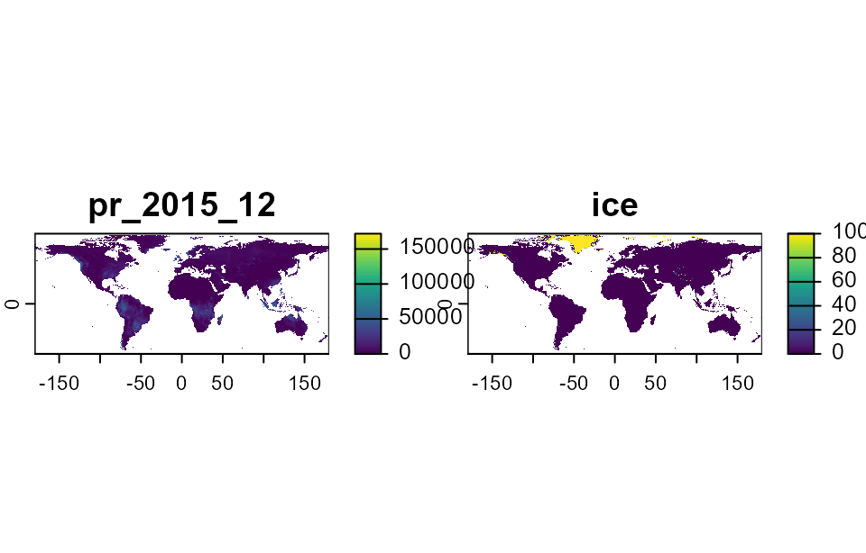
9. Save results
9.1. Save results as raster
If the “path” argument is used (default to NULL, i.e. no output stored locally), the retrieved and processed variables will be stored locally. Remember to specify the full path, including the filename and extension.
9.2. Save results as table
The same can be done if the output is a data.frame. In this case, the file written has to be a .csv file; specify the path accordingly.
processed_stored_raster <- var_get(shape = Alps, crs = 3035, path = "../Out/storedraster.tif") %>%
esalandcover(vars = c("ice")) %>%
chelsa(vars = c("pr"), months = 12, year = 2015)Results cannot be stored if the correlation check is added, as the output will be a list and not a SpatRaster/data.frame.
10. Conclusion
In this tutorial we have gone through all the potential ways in which the user can tailor the download and processing of data. For simplicity we have relied only on a few sources, but many more are available and can be checked at the reference or at the detailed explanation of all sources and variables.